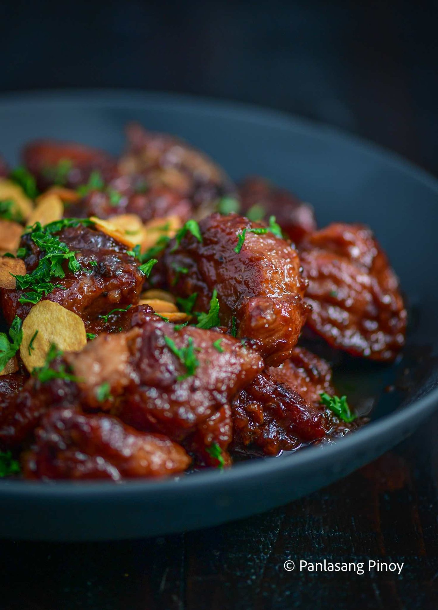
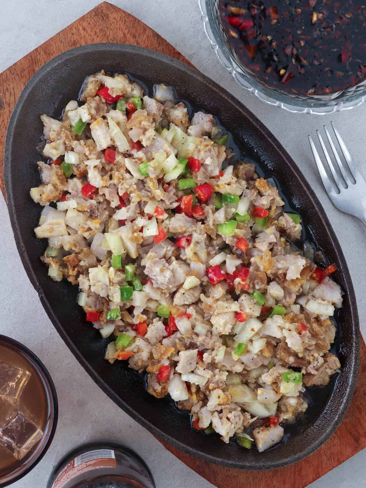
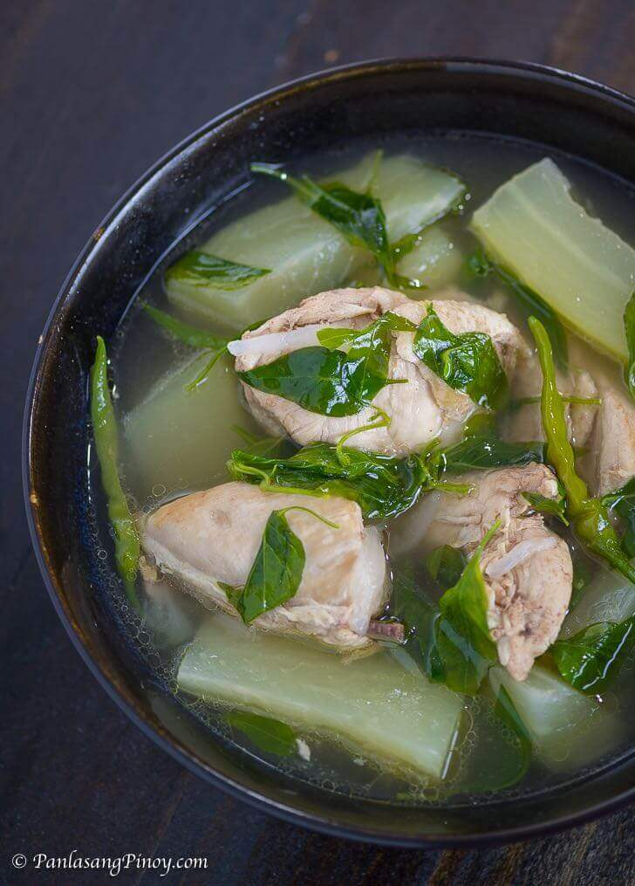
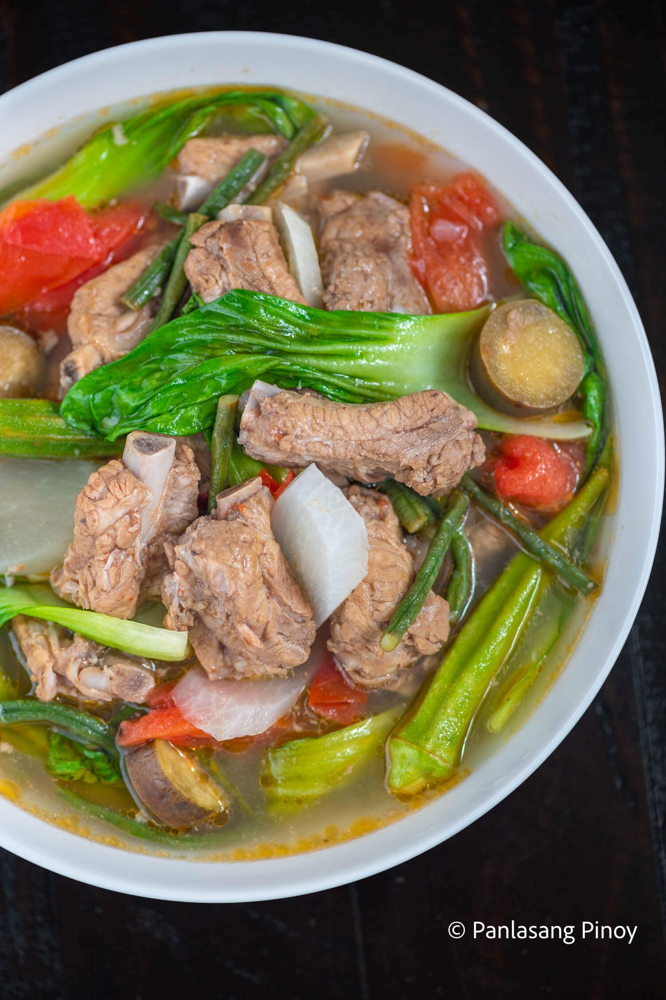
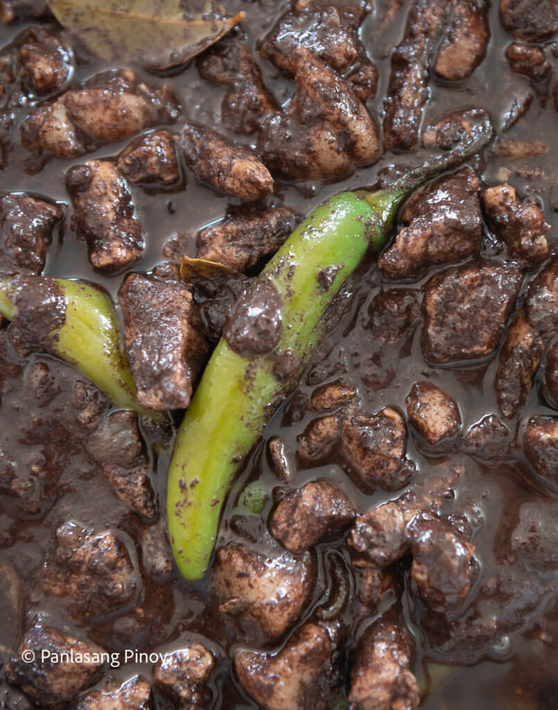
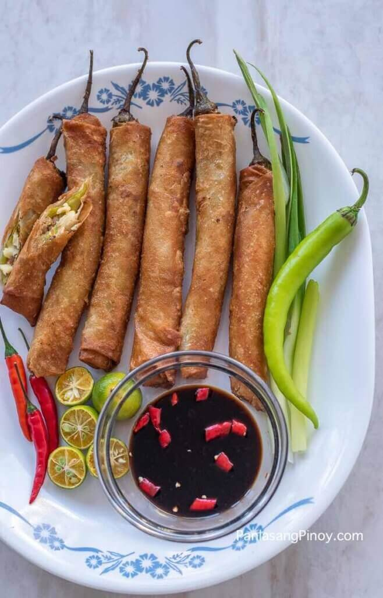
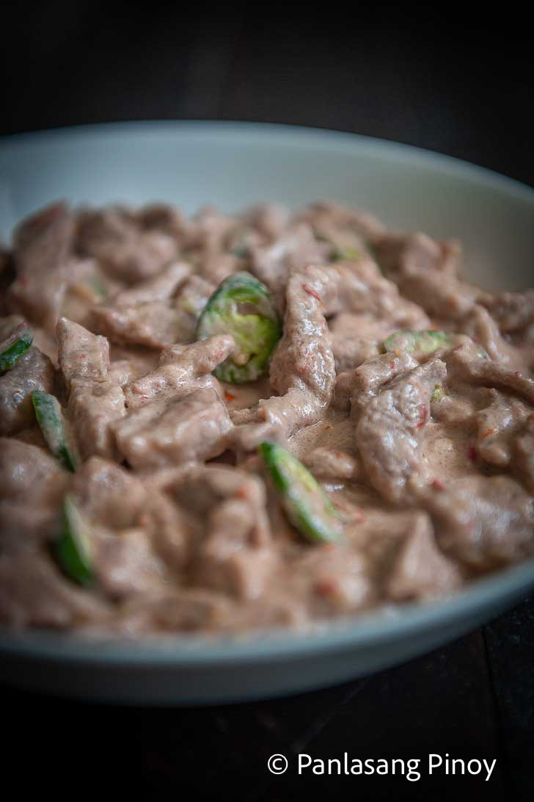
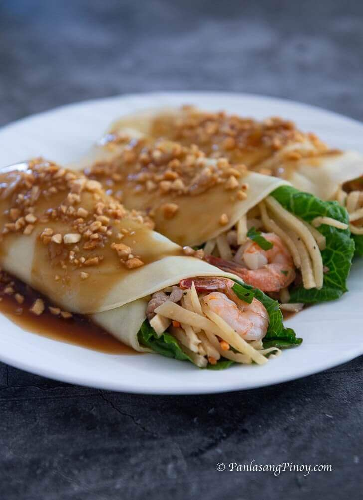
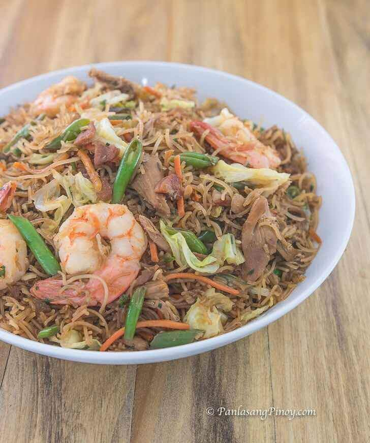
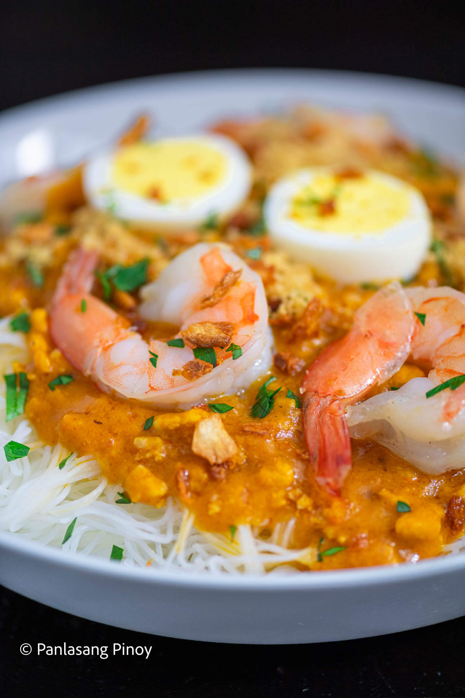

Adobo, a popular dish in Philippine cuisine. You may use chicken,
pork, seafood, or vegetables marinated in vinegar, soy sauce, and
garlic and slowly simmered until yummy! Many Filipinos consider adobo,
the national dish of the Philippines. The perfect adobo lies in the
delicate balance of soy sauce, vinegar, garlic and spices (bay leaves
and fresh ground peppercorns). Others use salt or patis (fish sauce)
to enhance flavors. Recipes vary from different regions in the
Philippines. The best way to start the preparation of adobo is to
marinate all ingredients for at least an hour or the longer, the
better. This is followed by gently stewing the mixture until the meat
is tender, and the marinade is reduced to a small amount of gravy.
Sisig. Nothing goes to waste in Filipino food. In the culinary capital
of Pampanga, they turn the pork's cheeks, head and liver into a
sizzling dish called Sisig. The crunchy and chewy texture of this
appetizer is a perfect match for a cold beer. Serve with hot sauce and
Knorr seasoning to suit the preference of you and your buddies. Credit
goes to Aling Lucing, who invented this dish at a humble stall along
the train railways in Angeles City, Pampanga. While Sisig can be found
in many restaurants, try the original version at Aling Lucing Sisig.
Aling Lucing Sisig, Adjacent to Abacan Bridge Henson Street, Angeles
City, Luzon Philippines;


Chicken Tinola is a Filipino soup dish. It involves cooking chicken
pieces in ginger broth. It is a popular cold weather dish. I always
feel warm and cozy every time I eat it. This Filipino Chicken Soup is
best enjoyed with fish sauce as dipping sauce, and a cup of warm white
rice.
One of the most beloved and familiar Filipino dishes out there,
sinigang introduces a great balance of warmth and sourness. The
tamarind broth is something that brings a great uniqueness to the
dish, while hyping up the flavor of all other ingredients. But have
you ever imagined this culinary classic with say, tender cuts of pork
baby back ribs? This might be your call to give Porknigang a try.


Definitely a dish for the more adventurous crowd, dinuguan is also
referred to as chocolate meat due to its dark brown hues. But don’t be
fooled –– this dish is anything but sweet! In fact, this savory stew
consists of what may be the farthest thing from chocolate. Warm,
hearty, and filling, dinuguan is popular (or notorious?) for its main
ingredient: pork blood. Add in some bay leaves, onions, ginger,
garlic, and long green pepper, and you have yourself a delicious stew!
How to cook dinuguan, as well as all its strong flavors, is a recipe
that we have passed down for years.
Dynamite Lumpia is a version of the popular Filipino deep-fried egg
rolls. This version is unique because it involves the use of stuffed
long green chili. The idea is somewhat similar to chile relleno,
except that the stuffed chili peppers are wrapped in lumpia wrapper
and deep fried until golden brown and crispy.


The mild sweetness of coconut milk brings a sense of delight to the
sharp notes of chili pepper and bagoong in the classic Bicol Express
recipe. This contrast has long created a spell-binding richness in
taste for the dish. And this has helped make it arguably one of the
most popular Filipino dishes.
Lumpiang Ubod is a version of Lumpiang Sariwa that makes use of hearts
of palm (ubod ng nyog) as filling. I love making this on a weekend
with the entire family. We usually enjoy this for lunch along with
grilled pork and cassava cake for dessert.


Pancit Guisado is a Filipino noodle dish. It is also known as Pancit
Bihon Gisado. This dish is composed of rice noodles, shredded chicken,
shrimp, and vegetables. The noodles are locally called bihon. The word
Guisado refers to the method used in cooking the dish. It simply means
sautéed.
A favorite at workplace parties, birthdays, and other celebrations,
Pancit Palabok is one of the staple noodles in Filipino cuisine. Tasty
and filling, this pancit contains a savory sauce that will make your
mouth water. It has become so popular that one of our most frequented
fast food chains, Jollibee, has taken it as one of their offerings!

© Panlasang Pinoy for images and food descriptions